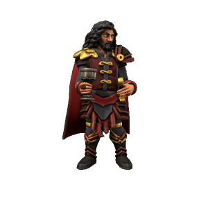

Strahd Drakul

Pronouns he/him
Species Human (Vampire)
Age Unknown
Affiliations None
Ideals
Above all else, Strahd lusts for power. Despite his utter dominion over all he surveys, he always wants more. His ultimate goal is to gain such notoriety on earth that he manifests as an Apotheote, at which point he can usurp Loga as the malefice of deception and gain his rightful place in the pantheon of gods.
Bonds
Strahd has powerful enemies. Having tricked the daemons Erodite, Avikath and Loga by playing them against one another, these three each hold a deep resentment towards him. All vampires, however, are loyal to him, being their creator and master.
Flaws
Strahd has no regard for others, he cares for no one but himself. He's fallen in love, many times, but his love is always fleeting and self serving. The one thing he truly loves is power.
The First Vampire
Strahd promised his allegience to Erodite in exchange for powers of seduction, to Avikath in exchange for wealth, to Loga in exchange for cunning and to Surtr for the power to bring about destruction. All believed they were his sole master, but all were deceived. With none wanting to claim him for fear of conflict with one another, Strahd walked away with powers beyond any mortal before, having given nothing.
Prince of Zarovia
Strahd was never first in line for his throne - he took it by force, murdering his own brothers to do so. He rules Zarovia with an iron fist, working his people to breaking point to turn the provincial princedom into a military powerhouse.
Statblock (5e)
Strahd Drakul
Medium undead (shapechanger), lawful evil
HP 144 (17d8+68)
Armour Class 16 (natural armour)
Speed 30ft.
| STR | CON | DEX | INT | WIS | CHA |
|---|---|---|---|---|---|
| +4 | +4 | +4 | +5 | +2 | +4 |
| 18 | 18 | 18 | 20 | 15 | 18 |
Damage Resistances Necrotic, bludgeoning, piercing and slashing from nonmagical attacks
Senses Darkvision (120ft.)
Skills Arcana +15, Perception +12, Religion +10, Stealth +14
Languages Abyssal, Common, Draconic, Elvish, Giant, Infernal
Challenge 15
Shapechanger. If Strahd isn’t in running water or sunlight, he can use his action to polymorph into a Tiny bat, a Medium wolf, or a Medium cloud of mist, or back into his true form.
While in bat or wolf form, Strahd can’t speak. In bat form, his walking speed is 5 feet, and he has a flying speed of 30 feet. In wolf form, his walking speed is 40 feet. His statistics, other than his size and speed, are unchanged. Anything he is wearing transforms with him, but nothing he is carrying does. He reverts to his true form if he dies.
While in mist form, Strahd can’t take any actions, speak, or manipulate objects. He is weightless, has a flying speed of 30 feet, can hover, and can enter a hostile creature’s space and stop there. In addition, if air can pass through a space, the mist can do so without squeezing, and he can’t pass through water. He has advantage on Strength, Dexterity, and Constitution saving throws, and it is immune to all nonmagical damage, except the damage he takes from sunlight.
Legendary Resistance (3/day). If Strahd fails a saving throw, he can choose to succeed instead.
Misty Escape. When he drops to 0 hit points outside his coffin, Strahd transforms into a cloud of mist (as in the Shapechanger trait) instead of falling unconscious, provided that he isn’t in running water or sunlight. If he can’t transform, he is destroyed.
While he has 0 hit points in mist form, he can’t revert to his vampire form, and he must reach his coffin within 2 hours or be destroyed. Once in his coffin, he reverts to his vampire form. He is then paralyzed until he regains at least 1 hit point. After spending 1 hour in his coffin with 0 hit points, he regains 1 hit point.
Regeneration. Strahd regains 20 hit points at the start of his turn if he has at least 1 hit point and isn’t in running water or sunlight. If he takes radiant damage or damage from holy water, this trait doesn’t function at the start of his next turn.
Spellcasting. Strahd is a 9th-level spellcaster. His spellcasting ability is Intelligence (spell save DC 18, +10 to hit with spell attacks). Strahd has the following wizard spells prepared:
- Cantrips (at will): mage hand, prestidigitation, ray of frost
- 1st level (4 slots): comprehend languages, fog cloud, sleep
- 2nd level (3 slots): detect thoughts, gust of wind, mirror image
- 3rd level (3 slots): animate dead, fireball, nondetection
- 4th level (3 slots): blight, greater invisibility, polymorph
- 5th level (1 slot): animate objects, scrying
Spider Climb. Strahd can climb difficult surfaces, including upside down on ceilings, without needing to make an ability check.
Vampire Weaknesses. Strahd has the following flaws.
- Forbiddance: He can’t enter a residence without an invitation from one of the occupants.
- Harmed by Running Water: He takes 20 acid damage if he ends his turn in running water.
- Stake to the Heart: If a piercing weapon made of wood is driven into his heart while he is incapacitated in his coffin, he is paralyzed until the stake is removed.
- Sunlight Hypersensitivity: While in sunlight, Strahd takes 20 radiant damage at the start of his turn, and he has disadvantage on attack rolls and ability checks.
Actions
Multiattack (Vampire Form Only). Strahd makes two attacks, only one of which can be a bite attack.
Unarmed Strike (Vampire Form Only). Melee Weapon Attack: +9 to hit, reach 5 ft., one creature. Hit: 8 (1d8+4) bludgeoning damage, plus 14 (4d6) necrotic damage. If the target is a creature, Strahd can grapple it (escape DC 18) instead of dealing the bludgeoning damage.
Bite (Bat or Vampire Form Only). Melee Weapon Attack: +9 to hit, reach 5 ft., one willing creature, or a creature that is grappled by Strahd, incapacitated, or restrained. Hit: 7 (1d6+4) piercing damage plus 10 (3d6) necrotic damage. The target’s hit point maximum is reduced by an amount equal to the necrotic damage taken, and Strahd regains hit points equal to that amount. The reduction lasts until the target finishes a long rest. The target dies if its hit point maximum is reduced to 0. A humanoid slain in this way and then buried in the ground rises the following night as a vampire spawn under Strahd’s control.
Charm. Strahd targets one humanoid he can see within 30 ft. of him. If the target can see Strahd, the target must succeed on a DC 17 Wisdom saving throw against this magic or be charmed. The charmed target regards Strahd as a trusted friend to be heeded and protected. The target isn’t under Strahd’s control, but it takes Strahd’s requests and actions in the most favorable way and lets Strahd bite it.
Each time Strahd or his companions do anything harmful to the target, it can repeat the saving throw, ending the effect on itself on a success. Otherwise, the effect lasts 24 hours or until Strahd is destroyed, is on a different plane of existence than the target, or takes a bonus action to end the effect.
*Children of the Night (1/day).* Strahd magically calls 2d4 swarms of bats or swarms rats, provided that the sun isn’t up. While outdoors, Strahd can call 3d6 wolves instead. The called creatures arrive in 1d4 rounds, acting as allies of Strahd and obeying his spoken commands. The beasts remain for 1 hour, until Strahd dies, or until he dismisses them as a bonus action.
Legendary Actions
Strahd can take 3 legendary actions, choosing from the options below. Only one legendary action option can be used at a time, and only at the end of another creature’s turn. Strahd regains spent legendary actions at the start of his turn.
Move. Strahd moves up to his speed without provoking opportunity attacks.
Unarmed Strike. Strahd makes one unarmed strike.
Bite (Costs 2 Actions). Strahd makes one bite attack.